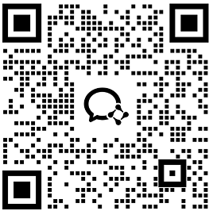

口语表达、流利度、发音清晰度与题型节奏。
PTE Academic Training
PTE Academic 培训
为澳洲升学、签证及英语能力提升提供专业指导
Reward Education 根据学生目前英语水平、目标分数及时间规划，提供一对一 PTE Academic 培训课程，协助学生建立应试策略与英语能力，提升考试表现。
PTE｜AEAS｜澳洲私校申请｜留学规划

Speaking · Writing · Reading · Listening
全科能力规划
About PTE
什么是 PTE Academic
PTE Academic（Pearson Test of English Academic）是由 Pearson 推出的国际英语能力测试， 被全球众多大学及机构认可。PTE 采用全机考模式，主要评估 Speaking、Writing、Reading 和 Listening 四项能力。
考试过程标准化程度高，出分速度快，因此成为许多留学生及国际学生的重要英语能力证明方式。
写作结构、语法准确度、内容组织与时间控制。
阅读速度、信息定位、逻辑理解与题型策略。
听力理解、笔记能力、重点抓取与综合运用。
Why PTE
为什么选择 PTE
How We Help
我们如何协助你准备 PTE
这一区是 PTE 学习规划的核心：先看学生真实基础，再决定训练顺序和备考节奏。
主任教师十年 PTE 教学经验
主任教师拥有十年 PTE 教学经验，并多次取得四项 90 的高分表现。课程会结合真实考试变化、 题型调整和评分趋势，快速更新备考策略，帮助学生更稳定地应对考试改版。
一对一客制化教学
每位学生的英语基础、目标成绩及时间规划都不同。我们不采用固定班级进度，而是通过一对一课程， 根据学生需求安排学习内容及备考策略。
系统化能力分析
课程开始前，我们会了解学生目前水平及目标需求，协助找出需要优先提升的部分。
- 口语表达
- 听力理解
- 阅读技巧
- 写作能力
- 考试策略
持续练习与反馈
通过课堂指导、练习安排及持续反馈，帮助学生逐步建立信心与考试技巧。
Students
适合哪些学生
准备澳洲大学申请
需要符合学校英语要求的学生。
计划申请私校或大学预科
希望提前建立学术英语能力。
希望提升英语能力
希望通过国际英语测试检视自身水平。
时间有限
需要更有针对性学习规划的学生。
Reward Education
Reward Education 的优势
FAQ
常见问题
PTE 和 IELTS 有什么不同？
两者皆为国际认可英语测试，但考试形式及评分方式有所不同。PTE 是全机考，评分流程更依赖系统化标准；IELTS 则包含纸笔或机考选项，并有面对面口语形式。适合哪一种，通常要看学生目标院校要求、个人表达习惯和备考时间。
我适合考 PTE 吗？
我们可以根据学生目前英语水平、目标分数和用途提供建议。如果学生更适应机考环境、希望考试安排更灵活，PTE 可能是可以考虑的选择。正式决定前，建议先评估听说读写基础和目标要求。
需要多久准备？
准备时间取决于学生目前水平、目标分数和每周可投入的学习时间。基础接近目标分数的学生，可以重点训练题型、时间分配和评分逻辑。差距较大的学生，则需要先补语言能力，再进入冲刺阶段。
课程是线上还是线下？
我们提供线上及线下授课安排。具体形式会根据学生所在地、时间安排和课程目标确认。无论线上还是线下，课程重点都会围绕一对一诊断、练习反馈和阶段性调整展开。
是否一定要有英语基础？
不需要，但不同基础会有不同学习规划。基础较弱的学生会先从词汇、句型、听力理解和表达能力建立开始。已经有一定基础的学生，则可以更快进入题型拆解和目标分数训练。
Book a consultation
不确定自己目前的英语水平？
与我们联系，了解适合您的 PTE 学习规划。你可以告诉我们目前英文基础、目标分数、预计考试时间， 我们会协助判断学习路径和备考重点。

微信咨询
扫码添加我们，获取 PTE 学习规划、升学申请与语言备考建议。